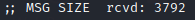

DNSSEC: make dns more secure
DNS ZoneEach DNS zone has a DNS
Resource Recourd (zone file) that contain resource records: SOA, NS, A, MX,...
How to make DNS more secure: DNSSEC
In
the chapter linked here there is a more in dept explanation of DNSSEC.
DNSSEC creates a secure domain
name system by adding signed records with private keys to existing DNS records.
By checking these signed
records with the correspondent public key, it is possible verify that a requested DNS record comes from its
authoritative name server and wasn’t altered en-route, opposed to a fake record injected in a man-in-the-middle
attack.
Similar to HTTPS, DNSSEC adds a layer of security by enabling authenticated answers on top of an
otherwise insecure protocol. Whereas HTTPS encrypts traffic so nobody on the wire can snoop on your Internet
activities, DNSSEC merely signs responses so that forgeries are detectable.
It make DNS little bit more secure
but a chain is strong as its weak link.
How to know if a Zone Support DNSSEC?
We
have to ask to the domain for DNS public key
dig -t DNSKEY @1.1.1.1 <domain>
dig -t DNSKEY @1.1.1.1 <domain> +trace #if we want to trace all the server queried
In the following interesting article we can find which registrar support DNSSEC and why is still an
unpopular protocol
https://blog.apnic.net/2017/12/06/dnssec-deployment-remains-low/Vulnerabilities
and problems with DNSSEC• domains that use DNSSEC can be used for
DNS
Amplification Attacks, because they can transform a query into a response with an amplification factor of
nearly 30 times. This happen when they respond to the ANY command
dig -t ANY +multiline @8.8.8.8 accenture.com
◇ query:
◇
response:
 This is been an amplification of 3860/121=32x
Solution:
Set the DNS to not respond to “ANY” queries or have
a mechanism in place to identify and prevent misuse. As recommend by
Neustar•
DNSSEC increase the query response time:
DNSSEC significantly increases the size of DNS response packets,
which drastically increases the computational load on the DNS servers and also increases the query response
time
• Install Fake Root Keys in a PC would compromise the chain of trust.
Here the paper•
DNSSEC requires time synchronization(like other protocols), if attacker can cause disruption in the synchronization
then DNSSEC fails to work properly
• Zonewalking: By using the NSEC records is possible to enumerate the
subdomains in a zone. It is better use NSEC3
For more see here:
https://appsecco.com/books/subdomain-enumeration/active_techniques/zone_walking.html
dig -t NSEC <DNSSEC-domain> #continue to search with the subdomain found
automate it with this script
#!/bin/bash
domain=$1
echo > domains.txt
while true; do
value=$(dig -t nsec $domain +short | awk '{print $1;}' )
domain=$value
lines1=$(grep -c ^ domains.txt)
grep -qxF -- "$domain" "domains.txt" || echo "$domain" |& tee -a "domains.txt"
lines2=$(grep -c ^ domains.txt)
if [[ $lines2 -eq 1 ]]; then
echo "Sorry i have not found NSEC records :("
fi
if [[ $lines2 -eq $lines1 ]]; then
break
fi
done
Bibliography:
• “Hands on Hacking: Become an Expert
at Next Gen Penetration Testing and Purple Teaming” Matthew Hickey, Jennifer Arcuri
•
https://docstore.mik.ua/orelly/networking_2ndEd/dns/ch11_04.htm•
https://www.cloudflare.com/dns/dnssec/how-dnssec-works/•
https://metebalci.com/blog/a-minimum-complete-tutorial-of-dnssec/•
https://blog.apnic.net/2017/12/06/dnssec-deployment-remains-low/•
https://blog.apnic.net/2017/12/06/dnssec-deployment-remains-low/